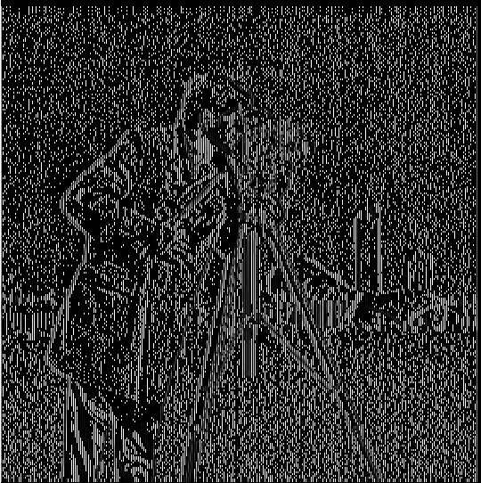
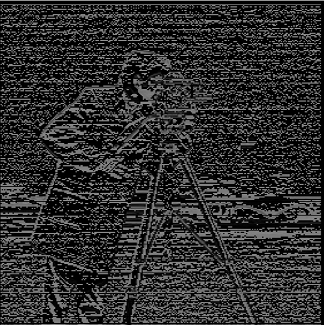
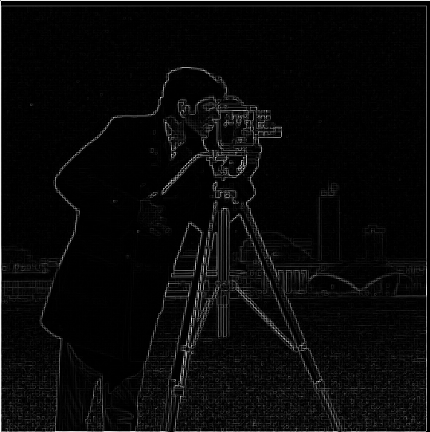
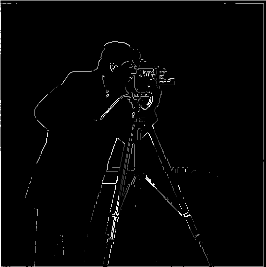

Original

Partials in x direction

Partials in y direction

Gradient Magnitude

Binarized

First, we use the finite difference operator, [1, -1], as a filter on the cameraman image below. We use it as a filter in both the x and y directions by convolving it with the image. Then, since we have the partial derivative in both directions at each pixel, we can compute the gradient magnitude and display it as well. Finally, to try to reduce noise, we can binarize the gradient magnitude using a threshold, which gives us an edge image.
Specifically, for the gradient magnitude computation, we already have the partial derivatives in the x and y direction at each pixel. These values stacked is the gradient at each pixel, and taking the 2-norm of the gradient gives us the gradient magnitude at each pixel.
The results above were somewhat noisy, as grass was often picked up if the threshold was not high enough, but actual edges weren't picked up if we did raise the threshold. To improve this, we can first blur the image by convolving it with a Gaussian kernel, which acts as a low pass filter, smoothing our image. Now we repeat the same process as above on the smoothed image, which should give us better results.
As we can see, this results in a much clearer and more defined edge around the cameraman and allows us to change the threshold to pick up more edges without picking up noise.
To get the above results, we performed two convolutions: one for smoothing the image, and one for getting the partial derivatives. We can actually achieve these results with only one convolution on our image by convolving the gaussian kernel with the finite difference operator, and then convolving the result of that with our image. Below you can see that we get the same result.
For this part we "sharpen" images using by utilizing a gaussian kernel again. Becuase using a Gaussian filter filters out the high frequencies of an image, we can obtain just the high frequencies by subtracting the low passed image from the original. Then we can add these high frequencies, scaled by some alpha, back to the original image, making it appear sharpened. However, this can actually be achieved in just one convolution by using a laplacian filter. Below are the results for 3 different images. For the City Hall image, I blurred it first and then sharpened it to see if this would "restore" the appearance of the image.

Next we make hybrid images. We can do this by using what we learned in the previous parts about using the high and low frequencies of an image. We know that we can get the low frequencies by applying a Gaussian filter, and the high frequencies by subtracting the smoothed image from the original. Additionally, we know that when looking at an image close up, we will be able to see the high frequencies, but if we back up, the low frequencies will dominate as we won't be able to see the details of the high frequencies. Therefore, we can create hybrid images by superimposing the high frequncies of one image over the low frequencies of the other. Then, depending on how close or far we are to the result, we should see one image or the other. First, we see the results of this with Derek and Nutmeg.


For the next hybrid, I used a picture of my dad when he was in high school for the low frequencies, and a picture of me when I was in high school for the high frequencies. This was my favorite result, and I think it turned out well because we look similar enough so that there isn't too much "contradiction" between the low frequencies from his picture with the high frequencies from mine. I think the low frequencies of his actually help smooth out the high frequencies of mine, while mine gives more structure to his image which has been blurred a lot.
(Failure) Lastly, I tried to create a hybrid of a plant and a tree, low passing the plant and high passing the tree. I tried multiple different alignments and kernel sizes but couldn't get a working hybrid. I think one issue is that the stucture of the images was not very similar, and the plant image in particular was much darker, so it dominated too much even up close.
For this part, we perform mulitresolution blending to create a seamless transition between an apple and an orange I did this with Gaussian and Laplacian stacks. A Gaussian stack differs from a Gaussian pyramid in that instead of downscaling the image at each level, we just low pass the image, but it stays the same size. This allows us to store a Gaussian stack of color images in a 4D array. Laplacian stacks are created by subtracting succesive layers of the Gaussian stack from each other. Therefore, a Laplacian stack would have n - 1 layers if the Gaussian stack has n, but we actually take the top level of the Gaussian stack (most blurred) and use it for the top layer of the Laplacian stack as well. Therefore, the Laplacian stack contains frequency bands of the original image. To obtain the original image, we can sum the levels of the Laplacian stack. To do the Multiresolution blending, we also create a mask, and a Gaussian stack of the mask. Then we combine the images of our two inputs at each level of the Laplacian stacks, using the corresponding mask at the same level of its Gaussian stack to create a smooth transition. In this way, we are blending the images at each frequency band separately, leading to a much better result. Below is the result for the apple and orange.


For this part, I perform the same multiresolution blending described above on some images of my choice, some with an irregular mask instead of the step function mask used for the oraple.
This one was my favorite result because it's very simple, but I think the multiresolution blending works really well for the soup, and the gradual blending between the two looks pretty natural, and what we would expect for two liquids. The figure below shows the masked inputs of the Laplacian stacks, as well as the combined results.
Next I thought it would be interesting to find images of ocean water and a pool from similar angles, and then perform multiresolution blending to make it appear that there is a patch of ocean water inside a pool. I think it turned out pretty well, but would look better with a more natural shaped mask.
(Failure) Finally, I tried to use multiresolution blending to take an image of a plant and make it appear to be on top of a shelf. I tried using different masks and Gaussian kernels, but couldn't get good results. I think this is mainly because the angle is slightly different, so it looks unnatural no matter what, but also becuase the backround color of the plant image is slightly different, so you can see discoloring just around the plant. Additionally the surface that the plant was on is a different material than the shelf, and the shadow of the plant gets cut off when blending. These factors result in the blending not working very well.